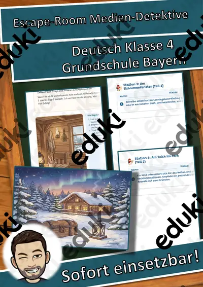
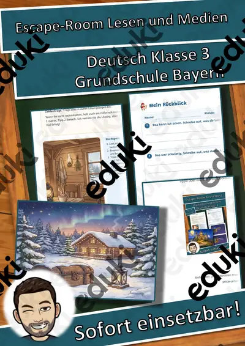
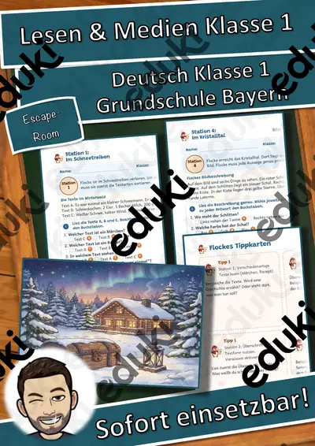
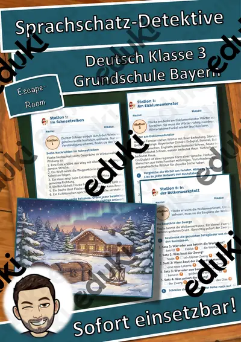

Lesespur: Medien-Detektive unterwegs – Lesespurgeschichte mit Rätseln (Klasse 3)
Medien-Detektive unterwegs – Lesespurgeschichte Ethik (Klasse 3/4)Begib dich mit deiner Klasse auf eine spannende Lesespur über Medien! Ella und Mehmet sind heute Medien-Detektive: Bei einer Rallye durch die Innenstadt durchschauen sie an der Litfaßsäule die Tricks der Werbung, wägen im Elektroladen Vor- und Nachteile von Tablets und Handys ab, prüfen am Kiosk eine unglaubliche Meldung, entdecken im Fotostudio, dass ein Foto nur einen Ausschnitt zeigt, lernen im Kino die Altersfreigaben kennen und vergleichen in der Bücherei verschiedene Quellen. Am Ende toben sie auf dem Spielplatz – ganz ohne Bildschirm. Der kleine Fuchs Flink ist immer dabei. Am Ende jedes Abschnitts verrät ein Hinweis den nächsten Ort auf dem Stadtplan – nur wer richtig liest und mitdenkt, findet den Weg und sammelt alle geheimen Buchstaben zum Lösungswort.
Die perfekte Lesespur für den ETHIKUNTERRICHT der 3. und 4. Klasse: Sie verbindet motivierendes, sinnentnehmendes Lesen mit alltagsnahen Gesprächsanlässen zur Medienbildung – und schult zugleich das genaue Arbeiten. Das Material ist SOFORT EINSETZBAR und in DREI DIFFERENZIERUNGSSTUFEN (leicht ★ / mittel ★★ / schwer ★★★) angelegt, sodass alle Kinder einer Klasse am selben Thema arbeiten können.WICHTIG: Das komplette Material ist sowohl in FARBE als auch in SCHWARZ-WEISS enthalten – ideal zum Sparen von Druckkosten.DAS IST ENTHALTEN
- Lesespurgeschichte in 3 Niveaus (leicht, mittel, schwer)
- farbiger Stadtplan als Suchkarte
- Hörverstehen mit QR-Code zur MP3 (selbstständiges Hören mit Kopfhörern)
- vier Aufgaben auf dem Weg: ein Zuordnungs-Rätsel, ein Quiz, eine Rechenaufgabe und ein Steckbrief
- Rätselseite (Wörter-Suchsel + Wissensfragen)
- Ausmalbild zum Thema
- ausführliches Lösungsblatt für die Lehrkraft
- alles zusätzlich als komplette Schwarz-Weiß-VarianteSO FUNKTIONIERT DIE LESESPURDie Kinder lesen ab START, entnehmen dem Text einen Hinweis auf einen Ort in der Stadt, suchen ihn auf dem Stadtplan und lesen bei dieser Station weiter. An jeder richtigen Station gibt es einen Buchstaben. Eingebaute Sackgassen (Eisdiele, Friseur, Post, Parkhaus) liegen zwar in der Stadt, sind aber keine Stationen und dienen der Selbstkontrolle. Am Ende werden die Buchstaben umgestellt und ergeben ein geheimes Lösungswort. (Die Lösungen sind selbstverständlich nur im Lösungsblatt für die Lehrkraft enthalten.)INHALTLICHER SCHWERPUNKTMedien begleiten Kinder überall – auf Plakaten, Bildschirmen, in Zeitschriften und im Kino. Die Kinder lernen, genau hinzuschauen: Werbung will verkaufen und zeigt nur die schönen Seiten; Tablets und Handys haben Vor- und Nachteile; nicht jede Meldung ist wahr; ein Foto zeigt nur einen Ausschnitt der Wirklichkeit und kann bearbeitet sein; Altersfreigaben schützen Kinder; gute Detektive vergleichen mehrere Quellen. Dazu gibt es klare Tipps für den Alltag: nichts Persönliches verraten, Fotos anderer nur nach Erlaubnis zeigen, bei gemeinen Nachrichten einen Erwachsenen einweihen und Pausen machen. So entsteht ein bewusster, verantwortungsvoller Umgang mit Medien.ABGEDECKTER LEHRPLAN (Klasse 3/4, Ethik)
- Ethik (LehrplanPLUS Bayern) – „Mit Medien kritisch umgehen" (Grundschule Jahrgangsstufe 3/4): sich bewusst sein, dass Medien nur Ausschnitte der Wirklichkeit vermitteln, eigene Mediengewohnheiten wahrnehmen, grundlegende Vor- und Nachteile elektronischer Medien erfassen und über einen verantwortungsvollen und sinnvollen Medienkonsum nachdenken.
- Deutsch – Lesen: Texten gezielt Informationen entnehmen, sinnentnehmend lesen; Zuhören: einem Hörtext konzentriert folgen (Hörverstehen mit MP3).
- Mathematik – Rechnen im Sachzusammenhang.
- Fächerübergreifend / Kompetenzen: Medienbildung, Verbraucherbildung, soziales Lernen, genaues Lesen, kreatives Gestalten (Ausmalbild).
Geeignet für Freiarbeit, Stationenlernen, Vertretungsstunden, Wochenplan, Projekttage zur Medienbildung und Homeschooling. Klassenstufe 3/4 (differenziert einsetzbar).
Ähnliche Materialien

Escape Room Medien-Detektive – Deutsch Klasse 4 Grundschule: 6 Stationen, 2 Schlösser

Lesespur: Sport und Medien: Werbung, Stars und Vorbilder – Lesespurgeschichte mit Rätseln (Klasse 10)

Escape Room Lesen und Medien – Deutsch Klasse 3 Grundschule: 6 Stationen, 2 Schlösser

Escape Room Lesen & Medien Klasse 1 – Deutsch Klasse 1 Grundschule: 6 Stationen, 2 Schlösser

Medien Lückentext mit Wortspeicher Hörverstehen und Suchsel

DaZ-Wortschatz Unterwegs in der Stadt – differenziert A1/A2/B1: Hörszene (QR), Lückentexte, Rollenspiel

Lesespur: Die Umwelt-Detektive – Lesespurgeschichte mit Rätseln (Klasse 5)
